Ceramics courses and workshops in Turin and around
Ceramics, wheel throwing, hand building, decoration and kintsugi courses in Turin, Cuneo and around: dates, prices and how to sign up.
Search all workshops63 activities coming up · updated on 23 November 2026
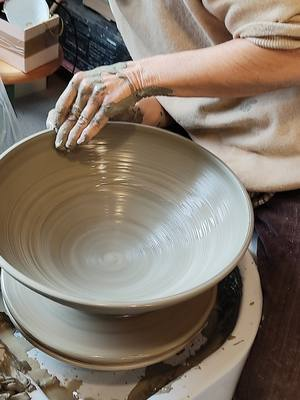
from18novCeramicsCeramics course: wheel or hand-buildingfrom Wednesday 18 November to Tuesday 22 DecemberAurora (TO) · 100 € for 4 sessionswith Aquarius Ceramica fri6novCeramicsMake your mug: a workshop with Rudfrom Friday 6 November to Sunday 29 November, 10:00–12:00San Salvario (TO) · 48 €with Rud at Pottery Lab
fri6novCeramicsMake your mug: a workshop with Rudfrom Friday 6 November to Sunday 29 November, 10:00–12:00San Salvario (TO) · 48 €with Rud at Pottery Lab mon23novCeramicsFoglietto: a ceramic memo magnetMonday 23 November, 18:30–20:30Vanchiglia (TO) · 40 €with Il Nicchio di via Monti
mon23novCeramicsFoglietto: a ceramic memo magnetMonday 23 November, 18:30–20:30Vanchiglia (TO) · 40 €with Il Nicchio di via Monti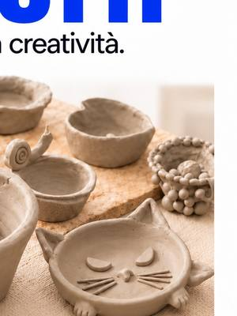
tue24novCeramicsClay for everyone: your first pieceTuesday 24 November, 15:00–17:00Santa Rita (TO)with Rossella Eula at Anima Atelier wed25novCeramicsChristmas workshop: ceramic decorationsWednesday 25 November, 17:00Cit Turin (TO) · 55 €with Scialabà
wed25novCeramicsChristmas workshop: ceramic decorationsWednesday 25 November, 17:00Cit Turin (TO) · 55 €with Scialabà from11novCeramicsCeramics course: from sketch to clayfrom Wednesday 11 November to Wednesday 16 December, every Wednesday, 18:30–20:30Cuneo (CN) · 180 € for 6 lessonswith Mario Ghibaudo at Atelier Crea-Arti
from11novCeramicsCeramics course: from sketch to clayfrom Wednesday 11 November to Wednesday 16 December, every Wednesday, 18:30–20:30Cuneo (CN) · 180 € for 6 lessonswith Mario Ghibaudo at Atelier Crea-Arti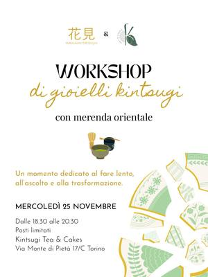
wed25novCeramicsKintsugi jewellery workshop: an Asian tea breakWednesday 25 November, 18:30–20:30Centro (TO) · 55 €with Hanami Design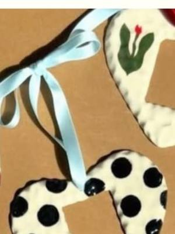
wed25novCeramicsPhoto frames: three ceramic framesWednesday 25 November, 18:30–20:30Vanchiglia (TO) · 40 €with Il Nicchio di via Monti thu26novCeramicsPaint ceramics: free decoratingThursday 26 November, 16:00–21:00Turinwith Spazio IAIA
thu26novCeramicsPaint ceramics: free decoratingThursday 26 November, 16:00–21:00Turinwith Spazio IAIA thu26novCeramicsModelling workshop: shapes from natureThursday 26 November, 18:00–20:30Cuneo (CN) · 25 €with Cooperativa Il Melograno
thu26novCeramicsModelling workshop: shapes from natureThursday 26 November, 18:00–20:30Cuneo (CN) · 25 €with Cooperativa Il Melograno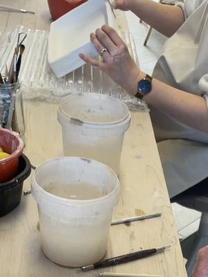
fri27novCeramicsAperitivo and ceramics: evening in the studioFriday 27 NovemberManta (CN) · 60 €with Laboratorio di Ceramica a Manta fri27novCeramicsSoap workshop: soaps and a soap dishFriday 27 November, 18:00–20:00Asti (AT) · 45 €with Naturali Creazioni at Naif Laboratorio Artistico
fri27novCeramicsSoap workshop: soaps and a soap dishFriday 27 November, 18:00–20:00Asti (AT) · 45 €with Naturali Creazioni at Naif Laboratorio Artistico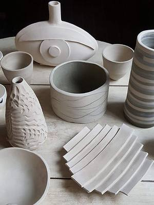
fri27novCeramicsAperipottery: slabs and coilsFriday 27 November, 18:30–20:30San Salvario (TO)with Pottery Lab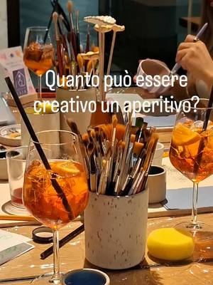
fri27novCeramicsSpritz and Pottery: aperitivo and ceramicsFriday 27 November, 18:30–21:00Turinwith Spazio IAIA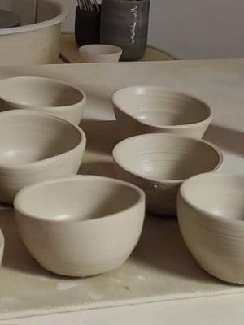
sat28novCeramicsWheel workshop: throwing multiplesSaturday 28 NovemberSan Donato (TO)with Chu Lab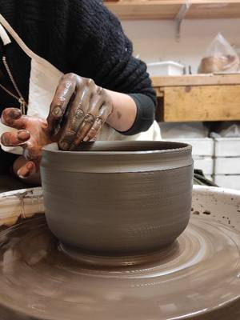
sat28novCeramicsWheel Full Immersion: four hours at the wheelSaturday 28 NovemberSan Donato (TO)with Chu Lab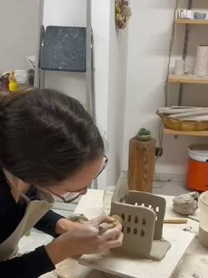
sat28novCeramicsBreakfast and ceramics: morning in the studioSaturday 28 NovemberManta (CN) · 60 €with Laboratorio di Ceramica a Manta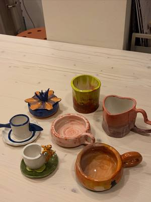
sat28novCeramicsArgilla Rituale: boliSaturday 28 NovemberVanchiglia (TO) · 45 €with Maccu at Maniera Factory sat28novCeramicsSculpting the clouds: clay sculptureSaturday 28 November, 10:00–12:30San Salvario (TO) · 50 €with Ermanno Cirulli at Pottery Lab
sat28novCeramicsSculpting the clouds: clay sculptureSaturday 28 November, 10:00–12:30San Salvario (TO) · 50 €with Ermanno Cirulli at Pottery Lab sat28novCeramicsKintsugi experience: mending with goldSaturday 28 November, 14:30–18:30San Salvario (TO) · 120 €with Pottery Lab with Diletta
sat28novCeramicsKintsugi experience: mending with goldSaturday 28 November, 14:30–18:30San Salvario (TO) · 120 €with Pottery Lab with Diletta sat28novCeramicsClay & Christmas: ceramic decorationsSaturday 28 November, 14:30–17:00Vanchiglietta (TO)with QB Creazioni
sat28novCeramicsClay & Christmas: ceramic decorationsSaturday 28 November, 14:30–17:00Vanchiglietta (TO)with QB Creazioni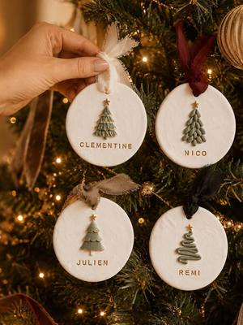
sat28novCeramicsCeramics workshop: Christmas decorationsSaturday 28 November, 14:30–18:30Villar Perosa (TO) · 60 €with Simona di Terraferma Ceramiche at Riflessi di Casa- sat28novCeramicsSoap workshop: soaps and a soap dishSaturday 28 November, 16:00–18:00Asti (AT) · 45 €with Naturali Creazioni at Naif Laboratorio Artistico
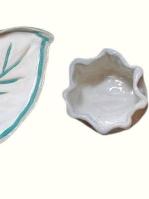
sat28novCeramicsAperilla: a clay aperitivo setSaturday 28 November, 17:00–19:00Vanchiglia (TO) · 40 €with Il Nicchio di via Monti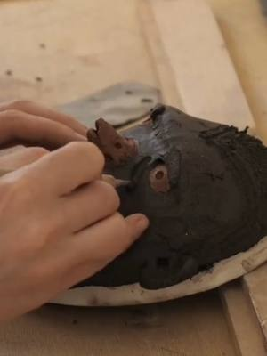
sun29novCeramicsClay mask: an animal characterSunday 29 November, 10:30–12:30Borgo Vittoria (TO) · 55 €with Giada Biagioni Ceramiche sun29novCeramicsJewellery workshop: kintsugi on ceramicsSunday 29 November, 11:00–13:00Santa Rita (TO)with Hanami Design at Anima Atelier
sun29novCeramicsJewellery workshop: kintsugi on ceramicsSunday 29 November, 11:00–13:00Santa Rita (TO)with Hanami Design at Anima Atelier- sun29novCeramicsDecorate your Christmas: festive ceramicsSunday 29 November, 14:00San Salvario (TO) · 25 € · sold outwith Pottery Lab
 sun29novCeramicsFree Clay: a bowl in an hourSunday 29 November, 14:30–18:30Vanchiglia (TO) · 25 €with Il Nicchio di via Monti
sun29novCeramicsFree Clay: a bowl in an hourSunday 29 November, 14:30–18:30Vanchiglia (TO) · 25 €with Il Nicchio di via Monti sun29novCeramicsClay & Christmas: ceramic decorationsSunday 29 November, 14:30–17:00Vanchiglietta (TO)with QB Creazioni
sun29novCeramicsClay & Christmas: ceramic decorationsSunday 29 November, 14:30–17:00Vanchiglietta (TO)with QB Creazioni sun29novCeramicsCeramics workshop: Christmas ornamentsSunday 29 November, 16:00San Donato (TO)with Chu Lab
sun29novCeramicsCeramics workshop: Christmas ornamentsSunday 29 November, 16:00San Donato (TO)with Chu Lab sun29novCeramicsMemorial sculpture: clay and remembranceSunday 29 November, 16:00–18:30Chivasso (TO)with Gabriella Gastaldi Ferragatta at Centro Origine
sun29novCeramicsMemorial sculpture: clay and remembranceSunday 29 November, 16:00–18:30Chivasso (TO)with Gabriella Gastaldi Ferragatta at Centro Origine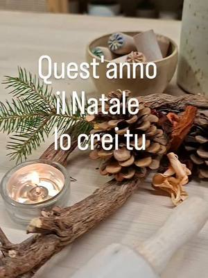
sun29novCeramicsChristmas Workshop: ceramic decorationsSunday 29 November, 16:00–22:00Turin · 20 € per hourwith Spazio IAIA sun29novCeramicsKintsugi jewellery workshop: a golden pieceSunday 29 November, 16:30–18:30Pianezza (TO) · 55 €with Hanami Design
sun29novCeramicsKintsugi jewellery workshop: a golden pieceSunday 29 November, 16:30–18:30Pianezza (TO) · 55 €with Hanami Design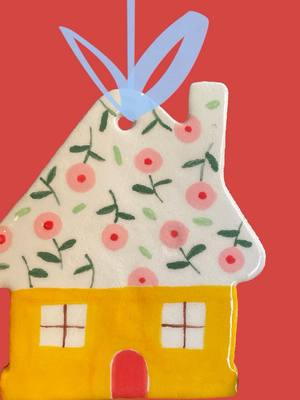
tue1decCeramicsDecorating workshop: ceramic ornamentsfrom Tuesday 1 December to Wednesday 2 December, 18:00–19:30San Salvario (TO) · 40 €with Studio Biscotto thu3decCeramicsCeramics and snacks: Christmas centrepieceThursday 3 December, 17:30–19:30Chivasso (TO) · 25 €with Laboratorio Perlaluna
thu3decCeramicsCeramics and snacks: Christmas centrepieceThursday 3 December, 17:30–19:30Chivasso (TO) · 25 €with Laboratorio Perlaluna fri4decCeramicsAperitivo and ceramics: Christmas eveningFriday 4 DecemberManta (CN) · 60 €with Laboratorio di Ceramica a Manta
fri4decCeramicsAperitivo and ceramics: Christmas eveningFriday 4 DecemberManta (CN) · 60 €with Laboratorio di Ceramica a Manta fri4decCeramicsCeramics workshop: slab-built mugFriday 4 December, 18:30Borgaro Torinese (TO) · 45 €with Nikin House
fri4decCeramicsCeramics workshop: slab-built mugFriday 4 December, 18:30Borgaro Torinese (TO) · 45 €with Nikin House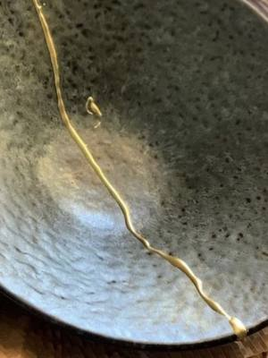
sat5decCeramicsContemporary kintsugi: mending with goldSaturday 5 December, 10:00–13:00Turinwith Komorebi Lab- sun6decCeramicsDecorate your Christmas: festive ceramicsSunday 6 December, 13:30–15:30San Salvario (TO) · 25 € · sold outwith Pottery Lab
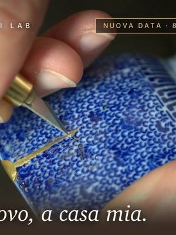
tue8decCeramicsContemporary kintsugi: gold and furoshikiTuesday 8 December, 10:00–13:00Bra (CN)with Komorebi Lab fri11decCeramicsCeramics workshop: miniatures on a small plateFriday 11 December, 18:30Borgomanero (NO) · 59 €with Il Tami Lab at Creo Workshop
fri11decCeramicsCeramics workshop: miniatures on a small plateFriday 11 December, 18:30Borgomanero (NO) · 59 €with Il Tami Lab at Creo Workshop sat12decFor familiesPottery wheel workshop: clay with mum and dadSaturday 12 DecemberSanta Rita (TO) · 25 € per child and parentwith Bunbury
sat12decFor familiesPottery wheel workshop: clay with mum and dadSaturday 12 DecemberSanta Rita (TO) · 25 € per child and parentwith Bunbury from11janCeramicsCeramics course: wheel or hand-buildingfrom Monday 11 JanuaryAurora (TO) · 200 € for 8 lessonswith Aquarius Ceramica
from11janCeramicsCeramics course: wheel or hand-buildingfrom Monday 11 JanuaryAurora (TO) · 200 € for 8 lessonswith Aquarius Ceramica from16janCeramicsCeramics course: the Saturday cyclefrom Saturday 16 January to Saturday 13 February, every Saturday, 09:30–12:30Aurora (TO)with Aquarius Ceramica
from16janCeramicsCeramics course: the Saturday cyclefrom Saturday 16 January to Saturday 13 February, every Saturday, 09:30–12:30Aurora (TO)with Aquarius Ceramica dateTBDOtherCascina Roccafranca: this season’s coursesDate TBDMirafiori (TO)with Cascina Roccafranca
dateTBDOtherCascina Roccafranca: this season’s coursesDate TBDMirafiori (TO)with Cascina Roccafranca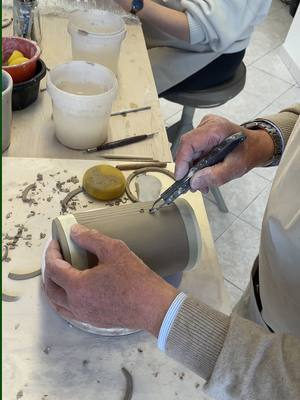
dateof your choiceCeramicsCeramics lessons: at your own paceDate of your choiceManta (CN) · 125 € for 4 lessonswith Laboratorio di Ceramica a Manta dateof your choiceCeramicsPrivate modelling courses: ceramicsDate of your choiceVanchiglia (TO)with Maccu at Maniera Factory
dateof your choiceCeramicsPrivate modelling courses: ceramicsDate of your choiceVanchiglia (TO)with Maccu at Maniera Factory- dateof your choiceCeramicsWheel throwing: one-to-one lessonsDate of your choiceVanchiglia (TO) · 45 € per lessonwith Ceramiche Musso at Maniera Factory
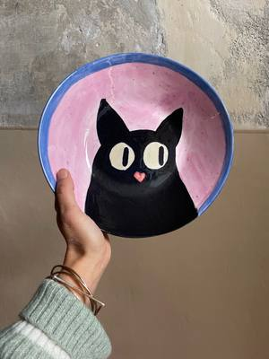
dateof your choiceCeramicsFree ceramic painting: pick and decorateDate of your choiceVanchiglia (TO) · from 15 €with Naïf dateof your choiceCeramicsCeramics course: modelling and glazingDate of your choiceVanchiglia (TO) · 120 € for 4 lessonswith Il Nicchio di via Monti
dateof your choiceCeramicsCeramics course: modelling and glazingDate of your choiceVanchiglia (TO) · 120 € for 4 lessonswith Il Nicchio di via Monti- dateof your choiceCeramicsWheel-throwing course: lessons for twoDate of your choiceVanchiglia (TO) · 45 € per lessonwith Il Nicchio di via Monti
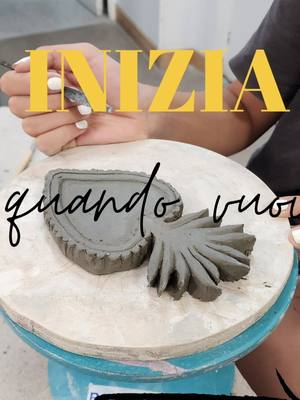
dateof your choiceCeramicsCeramics courses: wheel and hand buildingDate of your choiceSan Salvario (TO)with Openlab573 dateTBDCeramicsCeramics workshop: modelling and engobesDate TBDQuadrilatero (TO) · 50 € · sold outwith Ouimiel Studio
dateTBDCeramicsCeramics workshop: modelling and engobesDate TBDQuadrilatero (TO) · 50 € · sold outwith Ouimiel Studio dateof your choiceCeramicsThe tree of life: terracotta sculptureDate of your choiceSan Salvario (TO) · 95 €with Pottery Lab with Marta Pais
dateof your choiceCeramicsThe tree of life: terracotta sculptureDate of your choiceSan Salvario (TO) · 95 €with Pottery Lab with Marta Pais dateof your choiceCeramicsOpen studio: ceramics on your ownDate of your choiceSan Salvario (TO) · 50 € for 10 hourswith Pottery Lab
dateof your choiceCeramicsOpen studio: ceramics on your ownDate of your choiceSan Salvario (TO) · 50 € for 10 hourswith Pottery Lab dateof your choiceCeramicsHand-building course: slab and coilEvery week, in several sessionsSan Salvario (TO) · 150 € for 4 lessonswith Pottery Lab
dateof your choiceCeramicsHand-building course: slab and coilEvery week, in several sessionsSan Salvario (TO) · 150 € for 4 lessonswith Pottery Lab dateof your choiceCeramicsWheel-throwing course: four sessionsEvery Tuesday, Wednesday, Thursday or SaturdaySan Salvario (TO) · 150 € for 4 lessonswith Pottery Lab with Roberta Dalpasso
dateof your choiceCeramicsWheel-throwing course: four sessionsEvery Tuesday, Wednesday, Thursday or SaturdaySan Salvario (TO) · 150 € for 4 lessonswith Pottery Lab with Roberta Dalpasso dateof your choiceCeramicsCeramic decoration course: painted potteryDate of your choiceCit Turin (TO)with Scialabà
dateof your choiceCeramicsCeramic decoration course: painted potteryDate of your choiceCit Turin (TO)with Scialabà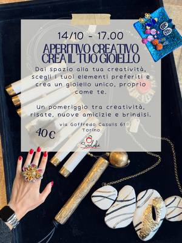
dateof your choiceCeramicsJewellery course: porcelain and clayDate of your choiceCit Turin (TO) · 125 €with Scialabà- dateof your choiceCeramicsCeramics course: slab building and wheelDate of your choiceCit Turin (TO) · 120 €with Scialabà
- dateof your choiceCeramicsWheel-throwing course: centring and formsDate of your choiceCit Turin (TO) · 120 €with Scialabà
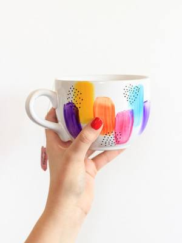
everythuCeramicsFive o’clock tea: decorate a mugEvery Thursday, 17:00–18:30San Salvario (TO) · 25 €with Pottery Lab with Diletta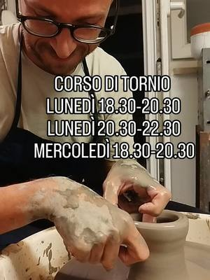
dateof your choiceCeramicsWheel-throwing course: all levelsEvery Monday and Wednesday, 18:30–20:30San Donato (TO)with Chu Lab